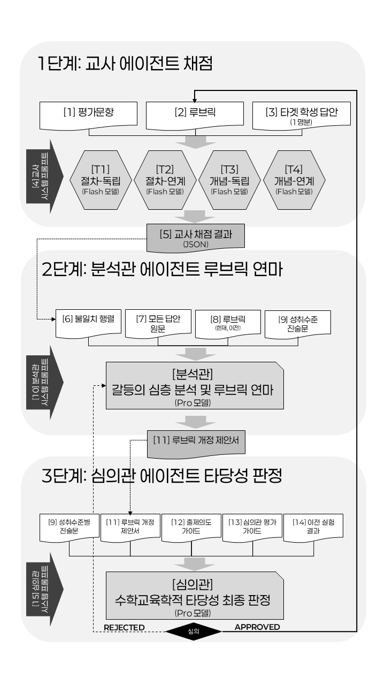

채점자별 채점 (채점자 선택 시 해당 채점자의 모든 답안 × 사이클 결과 렌더링)
학생 답안별 채점 (답안 선택 시 해당 답안의 모든 채점자 × 사이클 결과 렌더링)
채점 결과
사이클 개요
참조 표준 일치율 추이
Fleiss κ 추이
[절차] / [개념] 기준 수 추이
불일치 (student, criterion) 쌍 수
사이클별 요약 테이블
사이클 상세
경계 케이스 분석
참조 표준 기준으로 YES가 정답인 11개 케이스.
T1/T2(절차중심)은 NO로 판정 예상 — 사이클 진행에 따라 다수결이 YES로 수렴하는지 추적.
루브릭 진화 추적
실험 설계
[그림 1] 다중 에이전트 기반 자율 루브릭 최적화 프레임워크 시스템 구조도

<표 3-1> 교사 에이전트 API 접근 권한 및 통제 의도
| No. | 문서 표준 명칭 | 문서 내용 요약 | 상태 | 설계상 공개/제한 이유 |
|---|---|---|---|---|
| [1] | 평가 문항 원본 | 채점해야 할 문항 원문과 모범 답안 | 공개 | 채점의 대상이 되는 기본 문제 파악 |
| [2] | 현재 루브릭 | 이번 사이클에서 사용할 기준 코드별 채점표 | 공개 | 판단의 유일한 준거 |
| [3] | 타겟 학생 답안 | 해당 세션에 할당된 1명의 답안 | 공개 | 개별 평가 대상 |
| [4] | 교사 시스템 프롬프트 | 채점 철학 및 단계별 연계 판단 규칙 | 공개 | 페르소나 발현 조건 명시 |
| [-] | 타 교사의 채점 결과 | 동료 교사들의 판정 내역 및 의견 | 비공개 | 동조 현상 및 합의 강요 방지 |
| [-] | 나머지 학생의 답안 | 타겟 학생 외 15명 학생의 풀이 원문 | 비공개 | 상대평가화 원천 차단 |
| [-] | 분석관/심의관 로그 | 실험 목적 및 개정 방향 | 비공개 | 의도적으로 합의하는 오염 방지 |
| [5] | 교사 채점 결과 (JSON) | 이진 기준 판정 및 원문 발췌본 | 산출 | 분석관에게 넘길 핵심 원자료 |
<표 3-2> 분석관 에이전트 API 접근 권한 및 통제 의도
| No. | 문서 표준 명칭 | 문서 내용 요약 | 상태 | 설계상 공개/제한 이유 |
|---|---|---|---|---|
| [6] | 불일치 행렬 | 학생/교사별 엇갈림 및 교사들의 근거 | 공개 | 엇갈린 판정 사유의 원인 비교 대조용 |
| [7] | 전체 16명 학생 답안 | 모든 학생의 제출 답안 텍스트 | 공개 | '사실적 분쟁' 팩트체크: 원문 확인 |
| [8] | 현재 & 이전 루브릭 | 현재 버전과 바로 직전 버전의 기준표 | 공개 | 루브릭 변경 내역 추적 및 개정 참조용 |
| [9] | 성취수준별 진술문 | 교육과정 기반 수준별 역량 정의 | 공개 | 자의적 기준 완화/강화를 막고 교육과정에 복속 |
| [10] | 분석관 시스템 프롬프트 | 사실적/규범적 분류 의무 및 작성 지침 | 공개 | 객관적이고 기계적인 루브릭 개정 프로세스 강제 |
| [11] | 루브릭 개정 제안서 | 불일치 심층 분석 및 새로운 루브릭 표 | 산출 | 심의관의 승인 대상 (중간 결과물) |
<표 3-3> 심의관 에이전트 API 접근 권한 및 통제 의도
| No. | 문서 표준 명칭 | 문서 내용 요약 | 상태 | 설계상 공개/제한 이유 |
|---|---|---|---|---|
| [11] | 루브릭 개정 제안서 | 분석관이 작성한 원인 분석 및 새 루브릭 시안 | 공개 | 심의 및 판정의 핵심 대상 |
| [12] | 출제 의도 가이드 | 문항 설계 시 의도한 핵심 평가 목표 | 공개 | 개정안이 본래 평가 목적에 부합하는지 대조 |
| [9] | 성취수준별 진술문 | 교육과정 기반 수준별 역량 정의 | 공개 | 상/중/하 성취수준 논리적 변별 검증 |
| [13] | 심의관 평가 가이드 | 이론적 렌즈 (Skemp 등) | 공개 | 과도한 기계화 방어 및 다양한 표상 수용 |
| [14] | 이전 사이클 실험 이력 | 이전의 기각 사유, 통계 변화 추이 로그 | 공개 | 동일한 실수의 반복 기각 방지 |
| [15] | 심의관 시스템 프롬프트 | '반례 상상 의무' 및 단계별 심의 지침 | 공개 | 거부권 행사의 조건과 논리적 책임 강제 |
| [16] | 심의 최종 평결서 | 상상해 낸 반례 예시 및 승인/반려 판정 | 산출 | 다음 사이클 확정 또는 피드백 루프 생성 |
에이전트 프롬프트 원문 열람
논문 첨부 문서(Appendix A, B, C, C2)에 수록된 각 에이전트별 시스템 프롬프트 원문입니다.
참조 표준 — 답안별 열람 및 수학교육학적 점수 근거
참조 표준는 성취수준 진술문과 수학적 모범답안에 근거하여 실험 개시 전 사전 등록된 기준입니다.
각 답안을 선택하면 원문 전체와 항목별 점수의 수학교육학적 정당성을 확인할 수 있습니다.
보라색 테두리 = 교사 간 규범적 불일치이 설계된 경계 케이스.